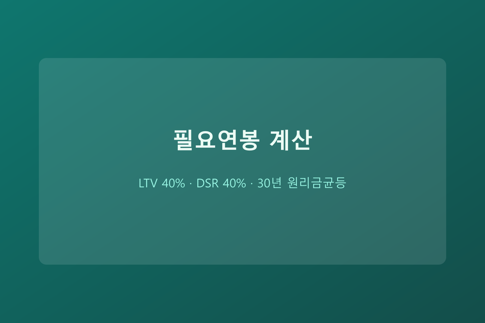

서울 30평대 아파트, 내 연봉으로 가능할까 — 자치구별 필요연봉 지도
시세를 새로 만들지 않고, LTV·DSR·원리금균등 공식으로 필요연봉만 역산합니다

이 글에서 하지 않는 것
자치구별 시세·중위가를 새로 쓰지 않습니다. 아래 숫자는 기준가 5억·6억·9억·12억·15억에 LTV 40%·DSR 40%·금리 4.5%·30년 원리금균등 공식을 적용해 계산한 값뿐입니다. 실제 대출 한도·금리는 금융기관 심사와 정책에 따라 달라집니다.
“이 동네 30평대, 내 연봉으로 될까?”라는 질문은 시세 숫자부터 찾게 만들기 쉽습니다. 오늘은 시세를 가정하지 않고, 사이트 계산기에서 쓰는 공개 공식만으로 필요연봉을 역산하는 순서를 정리합니다. 대상은 전용 60~85㎡(흔히 말하는 30평대)를 염두에 둔 서울 매수 시나리오입니다. 숫자는 “살 수 있다/없다”를 단정하는 값이 아니라, 같은 가정으로 비교하기 위한 기준선입니다.
읽는 순서는 이렇게 잡으면 됩니다. 먼저 LTV·DSR이 각각 무엇을 막는지 확인한 뒤, 표 1에서 내 목표 가격과 가까운 기준가 행을 고르고, 자치구 메모표에는 본인이 확인한 실거래·호가만 적어 같은 공식으로 채웁니다. 마지막에 FAQ에서 기존 대출·맞벌이·우대 LTV·금리 변화·은행 심사 차이를 점검하세요.
1. 계산에 쓰는 가정
본문 예시는 아래 네 가지를 고정합니다. ① 대출 비율 LTV 40% ② 총부채원리금상환비율 DSR 40% ③ 만기 30년, 원리금균등상환 ④ 금리 4.5%(사이트 연봉 아파트 계산기 기본 입력값과 동일). 기존 부채는 0으로 둡니다. 스트레스 DSR은 이 글 표·공식에는 반영하지 않았습니다.
원리금균등상환은 매달 같은 금액을 내되, 초기에 이자 비중이 크고 후기에 원금 비중이 커지는 방식입니다. 월 납입액 공식은 대출원금 × [월금리 × (1+월금리)^개월수] ÷ [(1+월금리)^개월수 − 1] 이며, 여기서 월금리 = 연 4.5% ÷ 12, 개월수 = 360입니다. 표의 월·연 원리금은 이 식으로 산출한 뒤 원 단위로 반올림한 값입니다.
1) 대출액 = 기준가 × LTV 40%
2) 월 원리금 = 원리금균등(대출액, 금리 4.5%, 30년)
3) 연 원리금 = 월 원리금 × 12
4) 필요연봉 = 연 원리금 ÷ DSR 40%
자기자금(참고) = 기준가 × (1 − LTV 40%) = 기준가 × 60%
2. LTV와 DSR이 각각 무엇을 제한하는가
LTV(Loan To Value, 담보인정비율)는 담보 주택 가격 대비 대출 가능 한도의 비율입니다. 규제 지역·주택 수·상품에 따라 상한이 달라지며, 이 글 예시는 비교를 위해 LTV 40%로 고정했습니다. 즉 기준가 10억이면 대출 상한 예시가 4억, 자기자금은 6억이 됩니다. LTV는 “집값 대비 얼마까지 빌릴 수 있는가”를 막는 상한입니다.
DSR(Debt Service Ratio, 총부채원리금상환비율)은 차주가 보유한 모든 가계대출의 연간 원리금 상환액을 연소득으로 나눈 비율입니다. 은행권 차주단위 DSR은 통상 연소득의 40% 이내로 안내됩니다(정책브리핑·금융당국 가계부채 관리 안내 기준). DSR은 “소득 대비 매달·매년 갚을 수 있는 원리금”을 막는 상한입니다.
같은 집값이라도 LTV만 여유롭고 DSR이 꽉 차 있으면 추가 대출이 막히고, 반대로 소득은 충분해도 LTV 상한에 걸리면 자기자금이 더 필요합니다. 이 글의 표는 두 상한을 동시에 맞춰 “기준가 → 필요연봉”을 역산한 결과입니다. 공식상으로는 먼저 LTV로 대출액을 정하고, 그 대출의 연 원리금이 연소득의 40%를 넘지 않도록 필요연봉을 역으로 구한 것입니다.
정책·상품에 따라 LTV 상한 숫자 자체는 40%가 아닐 수 있습니다. 규제지역 여부, 주택 수, 생애최초·서민금융 상품 등에 따라 달라집니다. 여기서 40%를 쓴 이유는 사이트 계산기 기본 가정과 맞춰 “같은 공식으로 구간만 비교”하기 위해서입니다. 본인 상품의 LTV가 다르면 대출액 = 기준가 × (본인 LTV)로 바꾼 뒤 같은 원리금·DSR 단계를 반복하면 됩니다.
3. 스트레스 DSR은 왜 붙는가 — 이 글 계산에는 미반영
스트레스 DSR은 실제 적용 금리에 가산금리(스트레스 금리)를 더해 원리금 상환액을 보수적으로 산정하는 방식입니다. 금리가 오르거나 변동금리 부담이 커질 때에도 갚을 여력을 남기도록 심사 한도를 줄이는 취지입니다. 금융당국·정책 안내에서 단계적으로 적용 폭을 넓혀 온 제도로, 상품·시기·차주 유형에 따라 가산 폭이 달라질 수 있습니다.
이 글의 표와 공식에는 스트레스 DSR을 넣지 않았습니다. 금리 4.5%·DSR 40%만으로 계산했기 때문에, 실제 은행·정책모기지 심사에서는 같은 소득으로도 한도가 더 낮게 나올 수 있습니다. 필요연봉 숫자를 “승인 확정값”으로 읽지 마시고, 스트레스 금리·기존 부채를 반영한 금융기관 사전 조회를 기준으로 삼으세요.
4. 표 1 — 기준가 5억·6억·9억·12억·15억 공식 적용 예시
아래는 같은 공식(LTV 40%·DSR 40%·금리 4.5%·30년 원리금균등·기존 부채 0)을 다섯 기준가에 대입한 결과입니다. 자치구 이름은 붙이지 않았습니다. 시세를 임의로 넣지 않기 위해서입니다.
| 기준가 | 대출액 (LTV 40%) | 자기자금 (60%) | 월 원리금 | 연 원리금 | 필요연봉 (÷DSR 40%) |
|---|---|---|---|---|---|
| 5억 원 | 2억 원 | 3억 원 | 1,013,371원 | 12,160,447원 | 약 3,040만 원 |
| 6억 원 | 2억 4,000만 원 | 3억 6,000만 원 | 1,216,045원 | 14,592,537원 | 약 3,648만 원 |
| 9억 원 | 3억 6,000만 원 | 5억 4,000만 원 | 1,824,067원 | 21,888,805원 | 약 5,472만 원 |
| 12억 원 | 4억 8,000만 원 | 7억 2,000만 원 | 2,432,089원 | 29,185,074원 | 약 7,296만 원 |
| 15억 원 | 6억 원 | 9억 원 | 3,040,112원 | 36,481,342원 | 약 9,120만 원 |
같은 LTV·DSR·금리·만기라면 기준가가 커질 때 필요연봉도 같은 배수로 커집니다. 5억은 6억의 5/6, 9억·12억·15억은 6억의 1.5배·2배·2.5배입니다. 월·연 원리금 원단위는 원리금균등 공식으로 산출한 뒤 반올림한 값입니다.
표만으로 감을 잡을 때는 “필요연봉” 열과 “자기자금” 열을 같이 보세요. 예를 들어 기준가 9억 행은 필요연봉 약 5,472만 원과 자기자금 5억 4,000만 원이 동시에 필요합니다. 연봉만 충분하고 현금·상환 여력이 부족하면 현실적으로는 더 낮은 기준가 구간을 보거나, 만기·금리·기존 부채를 다시 넣어야 합니다. 반대로 자기자금은 넉넉한데 소득이 DSR에 걸리면, LTV를 다 쓰지 않고 대출을 줄이는 쪽이 심사가 수월할 수 있습니다(한도·이자는 상품마다 다름).
제목의 “자치구별 필요연봉 지도”는 시세 지도를 그려 주는 뜻이 아닙니다. 25개 구 이름을 놓고, 본인이 넣은 기준가에 같은 공식을 적용해 필요연봉을 채워 가는 메모 지도입니다. 시세를 사이트에 고정해 두면 거래가 바뀔 때마다 글이 틀어지므로, 의도적으로 비워 두었습니다.
5. 자치구별 메모표 — 기준가는 직접 기입
자치구별 시세는 넣지 않았습니다. 아래 공식에 본인 지역 기준가를 넣어 계산하세요.
서울 25개 자치구 칸을 아래에 두었습니다. 기준가·필요연봉 칸은 비워 두었습니다. 관심 단지의 최근 실거래(또는 본인이 잡은 목표 가격)를 기입한 뒤, 위 공식이나 사이트 계산기로 필요연봉을 채우면 됩니다.
기준가를 채울 때는 “그 구 전체 평균”이 아니라, 내가 실제로 보는 전용 60~85㎡ 단지·층의 최근 거래나 목표가 한 건을 쓰는 편이 낫습니다. 같은 자치구 안에서도 입지·연식·재건축 여부에 따라 가격 폭이 큽니다. 기준가를 정했다면 표 1에서 가장 가까운 행을 참고하거나, 정확히 맞추고 싶으면 계산기에 목표 가격을 넣어 필요연봉을 역산하세요. 메모표는 인쇄·저장해 두고 금리·소득이 바뀔 때마다 다시 적는 용도입니다.
| 자치구 | 내가 본 기준가 (전용 60~85㎡) | 필요연봉 (공식 적용) |
|---|---|---|
| 종로구 | — | — |
| 중구 | — | — |
| 용산구 | — | — |
| 성동구 | — | — |
| 광진구 | — | — |
| 동대문구 | — | — |
| 중랑구 | — | — |
| 성북구 | — | — |
| 강북구 | — | — |
| 도봉구 | — | — |
| 노원구 | — | — |
| 은평구 | — | — |
| 서대문구 | — | — |
| 마포구 | — | — |
| 양천구 | — | — |
| 강서구 | — | — |
| 구로구 | — | — |
| 금천구 | — | — |
| 영등포구 | — | — |
| 동작구 | — | — |
| 관악구 | — | — |
| 서초구 | — | — |
| 강남구 | — | — |
| 송파구 | — | — |
| 강동구 | — | — |
6. 표 2 — 계산기에 넣을 값
| 도구 | 링크 | 무엇을 넣나 |
|---|---|---|
| 필요 연봉·실수령 감 | /tools/income-calculator/ | 세전 연봉·공제 항목을 넣어 실수령 구조를 먼저 확인. 대출 한도 낙관 전에 “세후 − 고정비”를 적는 용도. |
| 연봉 아파트 계산기 | /tools/apt-calculator/ | 연봉·보유 현금·기존 월 상환·지역·LTV·금리·만기를 입력. 정방향(연봉→가능 가격)과 역방향(목표 가격→필요 현금·소득)을 모두 볼 수 있음. |
이번 표 1은 금리를 4.5%로 고정했고, 계산기 기본값과 맞춰 두었습니다. 금리를 바꾸면 월 원리금과 필요연봉이 달라지니, 본인 조건을 넣을 때는 계산기에서 금리·기존 부채를 함께 조정하세요.
연봉 아파트 계산기는 정방향(지금 연봉으로 어느 가격대까지)과 역방향(목표 가격에 필요한 소득·현금)을 같이 볼 수 있습니다. 이 글의 표 1은 역방향만 고정 가정으로 풀어 둔 참고표이고, 소득 계산기는 세전·세후 구조를 먼저 정리할 때 씁니다. “세전 연봉 ÷ DSR”만 보고 결정하면 실수령·고정비·기존 상환을 빼먹은 낙관이 나오기 쉬우니, 두 도구를 이어서 쓰는 편이 안전합니다.
계산기에 지역을 넣을 때도 이 글과 같이 시세를 자동으로 채우지 않습니다. 사용자가 넣은 가격·연봉·금리만으로 공식 결과를 보여 주는 구조입니다. 글과 도구의 가정이 어긋나지 않게, 표 1과 동일한 4.5%·30년·LTV 40%부터 시작한 뒤 본인 조건만 바꾸는 순서를 권합니다.
7. 자주 묻는 질문
Q1. 기존 대출이 있으면 필요연봉이 어떻게 달라지나요?
DSR은 신규 주담대만이 아니라 신용대출·자동차할부·기존 주담대 등 모든 가계대출의 연 원리금을 합산합니다. 표 1은 기존 부채를 0으로 둔 값이라, 이미 월 상환이 있으면 같은 기준가에 필요한 연봉이 더 커집니다. 계산기에는 “기존 월 상환액”을 넣고, 연 원리금 여유분 = (연소득 × 0.4) − (기존 연 원리금)으로 남은 한도만 신규 대출에 배분하세요.
Q2. 맞벌이면 소득을 합산하나요?
부부 공동 차주·소득 증빙이 가능한 경우 금융기관은 합산 소득으로 DSR을 보는 경우가 많습니다. 다만 한쪽만 차주이거나 증빙이 안 되면 단독 소득으로 잡힐 수 있습니다. 이 글 표의 “필요연봉”은 합산·단독을 구분하지 않은 단일 연소득 기준이므로, 맞벌이면 합산 가능 여부를 은행에 먼저 확인하고 같은 공식에 합산 연봉을 넣으면 됩니다.
Q3. 생애최초·신혼이면 LTV가 더 나오지 않나요?
정책모기지·은행 상품에 따라 생애최초·신혼 등 우대 시 LTV 상한이 일반 규제보다 높게 적용되는 경우가 있습니다. 이 글은 비교를 위해 LTV 40%로 고정했으므로, 우대가 적용되면 같은 기준가에서 대출액은 늘고 자기자금은 줄 수 있습니다. 다만 DSR(및 스트레스 DSR) 한도는 별도로 걸리므로 LTV만 올라간다고 필요연봉이 자동으로 낮아지지는 않습니다. 상품별 LTV·소득 요건은 주택금융공사·해당 은행 안내를 확인하세요.
Q4. 금리가 5%이면 표 숫자와 얼마나 달라지나요?
표 1은 금리 4.5% 고정입니다. 금리가 5.0%로 오르면 같은 대출액에서도 월·연 원리금이 커지고, DSR 40%를 맞추려면 필요연봉도 올라갑니다. 공식 자체는 동일합니다. 원리금균등(대출액, 금리 5%, 30년) → 연 원리금 ÷ 0.4. 대략의 감만 보려면 계산기에서 금리만 5%로 바꿔 재계산하세요. 이 글에서는 5% 행을 새로 만들지 않았습니다(가정 금리를 하나로 유지하기 위함).
Q5. 계산 결과와 은행 심사가 다른 이유는 뭔가요?
표는 LTV 40%·DSR 40%·금리 4.5%·만기 30년·기존 부채 0·스트레스 DSR 미반영이라는 단순 가정입니다. 은행은 신용등급, 재직·소득 증빙 방식, 담보 평가액, 기존 부채 산정, 스트레스 금리, 상품별 한도·중도상환 조건 등을 추가로 봅니다. 그래서 사이트 숫자가 “가능”으로 나와도 심사에서는 한도가 줄거나, 반대로 우대 상품·합산 소득으로 여유가 생길 수도 있습니다. 최종 한도는 금융기관 사전 조회·약정 조건을 기준으로 하세요.
8. 정리
오늘 글의 핵심은 “시세를 새로 만드는 것”이 아니라 기준가를 넣은 뒤 같은 공식으로 필요연봉을 읽는 법입니다. 표 1의 5억·6억·9억·12억·15억 행만 공식으로 채웠고, 자치구 칸은 빈칸으로 남겨 두었습니다. LTV는 집값 대비 대출 상한, DSR은 소득 대비 상환 상한이며, 스트레스 DSR은 이 계산에 넣지 않았습니다.
실무적으로는 ① 관심 단지 기준가 확정 → ② 표 1 또는 계산기로 필요연봉·자기자금 확인 → ③ 기존 부채·맞벌이 합산·우대 LTV 여부를 FAQ 기준으로 보정 → ④ 금융기관 사전 조회로 스트레스 DSR·심사 조건을 맞추는 순서가 안전합니다. 이 페이지의 숫자는 비교용 기준선이고, 승인 가능 여부의 최종 기준은 아닙니다.
📎 참고 자료
- 정책브리핑 — 가계부채 관리 방안 Q&A (차주단위 DSR)
- 정책브리핑 — 스트레스 DSR 관련 정책 안내
- 한국주택금융공사 — 보금자리론 상품소개 (LTV·DTI 안내)
- 사이트 계산 로직: 연봉 아파트 계산기 원리금균등·DSR 역산
계산 결과는 참고용이며, 실제 대출 가능 여부와 한도는 금융기관 심사·상품 조건에 따릅니다. 투자·세무 자문이 아닙니다.

본 글은 2026년 11월 16일 기준 정보이며, 대출 규제·금리는 변경될 수 있습니다. 계산 결과는 참고용입니다. 실제 대출은 금융기관·공식 안내를 확인하세요.